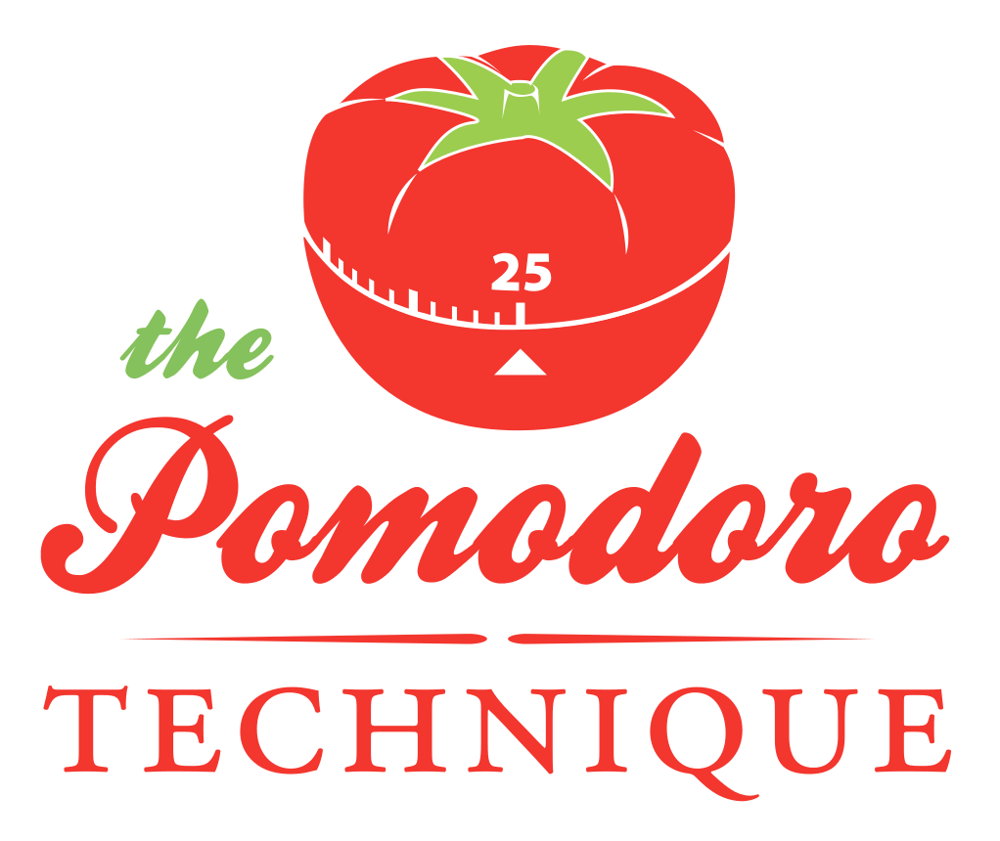

La técnica pomodoro

¿Qué es la técnica pomodoro?
- Es una técnica de organización del tiempo que sirve para
organizar mejor el trabajo, incrementar la productividad, lograr
las metas en la fecha propuesta y reducir la ansiedad.
- Fue inventada por Francesco Cirillo a finales de los ochenta.
- Surgió cuando el inventor, cuando era estudiante, se preguntó
en qué se le iba el tiempo.
- Su pregunta inicial fue: ¿Podré estudiar, realmente estudiar, durante
diez minutos?
- La he utilizado desde diciembre, aproximadamente, por que sabía que tendría
una carga increíble de trabajo este semestre.
Método
La técnica consta de cinco etapas que se realizan diariamente.
| ¿Qué? |
¿Cuándo? |
¿Por qué? |
| Planear |
al inicio del día |
para decidir las actividades del día |
| Medir |
a lo largo del día |
para obtener datos sobre el esfuerzo realizado y otras métricas |
| Registrar |
al final del día |
para compilar un archivo de observaciones diarias |
| Procesar |
al final del día |
para convertir los datos en información |
| Visualizar |
al final del día |
presentar información en un formato que facilite la comprensión
y ayude a mejorar |
Materiales
Para realizar la técnica se recomiendan los siguientes materiales:
- Un temporizador de cocina. De preferencia en forma de tomate para
que se vea bien "nice", pero en realidad puede ser de cualquier forma.
También es preferible que haga un sonido de tic-tac y una campanita
cuando termine el tiempo.

- Una hoja de pendientes del día.
- Una hoja de inventario de actividades
- Una hoja de registro.
En la página de la técnica Pomodoro
(www.pomodorotechnique.com)
hay formatos prediseñados para las hojas requeridas.
Primer objetivo: Saber cuánto esfuerzo requiere una actividad
- Un "pomodoro" es un periodo de trabajo de 25, con 5 minutos de descanso.
- Al inicio de cada día, debes hacer una lista de actividades a realizar,
ordenadas por prioridad.
- Las actividades más importantes van hasta arriba.
Ejemplo:
| |
Por hacer hoy |
Mexicali, 26 de abril de 2012 |
| |
Revisar trabajo del grupo 434 sobre respaldos. |
|
| |
Hacer presentación sobre técnica pomodoro. |
|
| |
Lavar los trastes. |
|
Inicia el primer pomodoro
- En este momento debes iniciar la primera tarea de tu lista. Dale cuerda
al temporizador y comienza a trabajar únicamente en la primera tarea.
- Deben ser 25 minutos de puro trabajo, sin distracciones.
- Un pomodoro es indivisible. No hay mitades, ni cuartas partes.
Los 25 minutos deben estar dedicados exclusivamente a una sola tarea.
- Si de plano tienes que interrumpir tu actividad, el pomodoro se anula.
Termina el primer pomodoro
- Es importante que cuando se cumplan los 25 minutos, suene alguna campanita.
- Aunque quieras seguir trabajando, NO DEBES HACERLO.
- En serio, deténte.
- Si terminaste la tarea, pon una tacha en tu hoja de actividades del día.
| |
Por hacer hoy |
Mexicali, 26 de abril de 2012 |
| |
Revisar trabajo del grupo 434 sobre respaldos. |
X |
| |
Hacer presentación sobre técnica pomodoro. |
|
| |
Lavar los trastes. |
|
El break
- Después de 25 minutos de arduo trabajo, te puedes tomar un pequeño break.
- Break significa break. No hagas nada que represente esfuerzo.
- A lo mejor estás presionado y con el tiempo encima, pero es mejor que
descanses. Rendirás más, créeme.
- Puedes caminar un poco, ver a través de la ventana, entrar al Facebook
al Google+.
- Nomás no te quedes chateando, la gente te atrapa y vas a ser un grosero
lléndote repentinamente. Además, eso estresa.
- Después de los merecidos cinco minutos. Si no terminaste la actividad anterior,
continúala durante otros 25 minutos.
- Si la terminaste, continúa con la siguiente actividad de la lista.
El break más largo
| |
Por hacer hoy |
Mexicali, 26 de abril de 2012 |
| |
Revisar trabajo del grupo 434 sobre respaldos. |
X X X X |
| |
Hacer presentación sobre técnica pomodoro. |
|
| |
Lavar los trastes. |
|
- Cada cuatro pomodoros puedes tomar un break más largo (15-20 mins.)
- Tómate un café, revisa el correo, platica con alguien.
- No hagas nada complejo. Estos pequeños breaks te hacen ser más productivo
luego. Si no, terminarás muy cansado.
Al terminar una actividad
| |
Por hacer hoy |
Mexicali, 26 de abril de 2012 |
| |
Revisar trabajo del grupo 434 sobre respaldos. |
X X X X |
| |
Hacer presentación sobre técnica pomodoro. |
|
| |
Lavar los trastes. |
|
- Si terminas una tarea antes de los 25 minutos, continua trabajando
en ella.
- Intenta mejorarla, intenta hacer algo para trabajar en lo mismo hasta que
suene la campana.
- Si ya no puedes hacer nada más, pon la tacha en tu hoja y tacha también la
actividad.
Al final del día
Es posible que al final del día tengas una tabla más o menos así.
| |
Por hacer hoy |
Mexicali, 26 de abril de 2012 |
| |
Revisar trabajo del grupo 434 sobre respaldos. |
X X X X |
| |
Hacer presentación sobre técnica pomodoro. |
X X X |
| |
Lavar los trastes. |
X X |
Si una tarea te llevó cinco pomodoros o más, sabes que para la próxima vez
que tengas que hacer una similar, debes dividirla en tareas más pequeñas.
Registrar
Al final del día debes pasar los datos obtenidos a una hoja de inventario que
debes archivar.
| Registro |
BadBit |
| Fecha |
Hora |
Tipo |
Actividad |
Pomodoros |
Notas |
| 2012-04-26 |
9:30 am |
Escribir |
Presentación sobre técnica pomodoro |
4 |
15 diapositivas en slidy. |
| 2012-04-26 |
11:50 am |
Revisión |
Revisar trabajos del 434 |
3 |
35 trabajos |
| 2012-04-26 |
2 pm |
Doméstico |
Lavar trastes. |
2 |
|
Esta hoja, con el tiempo, te dará una idea de cuánto tiempo te tardas normalmente
en actividades que realizas frecuentemente.
¿Cómo lidiar con las interrupciones?
Existen dos tipos de interrupciones, principalmente:
- Internas: Son aquellas que inicia uno mismo. Cuando nos quedamos
viendo una página web, cuando se nos pone la mente en blanco, cuando nos
hacemos tontos, nos distraemos cambiando la música, etc. Cada vez que
hagas algo de esto dentro de un pomodoro, coloca una pequeña apóstrofe
en la hoja donde anotas tus pomodoros.
| |
Por hacer hoy |
Mexicali, 26 de abril de 2012 |
| |
Revisar trabajo del grupo 434 sobre respaldos. |
X X' X X |
| |
Hacer presentación sobre técnica pomodoro. |
X X X |
| |
Lavar los trastes. |
X' X |
¿Cómo lidiar con las interrupciones?
Interrupciones internas
Si de pronto recuerdas algo importante que debes hacer, debes preguntar
si es urgente. Si no lo es, déjala para mañana, ya que arruinaría tus
planes para el día. Si lo es, anótala hasta el fondo de tu hoja de
pomodoro.
| |
Por hacer hoy |
Mexicali, 26 de abril de 2012 |
| |
Revisar trabajo del grupo 434 sobre respaldos. |
X X' X X |
| |
Hacer presentación sobre técnica pomodoro. |
X X X |
| |
Lavar los trastes. |
X' X |
| |
|
|
| |
IMPREVISTAS Y URGENTES |
|
| |
Llamar a Telnor para reclamar sobre mi recibo. |
|
¿Cómo lidiar con las interrupciones?
Interrupciones externas
- Externas: Son aquellas generadas por otros, sobre las cuales no tenemos
control. Estas suceden mucho más cuando nos encontramos en un ambiente
laboral con compañeros de trabajo.
¿Qué hacer en estos casos?
- Si el pomodoro debe ser interrumpido, se declara nulo.
- Se puede pedir al compañero de trabajo que nos permita unos
minutos, para atenderlo ya que el pomodoro finalice. Si esto es posible
de todas formas debe ponerse un apóstrofe en nuestra lista de tareas.
- Si podemos posponerlo, anotamos la actividad que nos pidieron en la
categoría de "imprevistas y urgentes".
Estimar esfuerzo
- Después de varios días de llevar un registro de tus actividades, irás conociendo
tu propia velocidad
- Esto te permitirá dos cosas: Saber cuántos pomodoros te lleva cada tarea y
saber cuántos pomodoros puedes hacer en un solo día.
- Con estos datos ya puedes estimar lo que puedes hacer en uno o varios días
y acabar tus tareas a tiempo.
| |
Inventario de actividades |
Miguel Lozano |
| |
Lavar los trastes. |
2 |
| |
Revisar tarea del 434. |
3 |
| |
Leer artículo sobre práctica social (40 págs.). |
3 |
| |
Planear clases para mañana |
4 |
Software de Pomodoro
Existen algunos programas que pueden ayudarte a llevar la cuenta de los
pomodoros, pero no he encontrado ninguno totalmente satisfactorio para mis fines.
Windows
Linux
Web
Mac
- Se los debo, hace años que no toco una mac.
¿De qué me ha servido esta técnica?
- Aumentar mi productividad.
- Disminuir mis distracciones (soy increíblemente disperso).
- Aprovechar mejor mi tiempo, que el tiempo no se me vaya de las manos.
- Puedo trabajar más relajadamente por que no dejo las cosas para el último.
- Es muy tranquilizante tener un plan claro y realista delante de uno.
¿Qué he hecho mal?
- Aprendí muy pronto que la técnica no logra que el día tenga más horas.
- Si saturo mi día con clases y pomodoros, termino tan cansado que no puedo
rendir ni en uno ni en lo otro.
- El peor enemigo es uno mismo.
- No he conseguido todavía un buen temporizador, uno que me de mucho gusto
usar y que sea confiable.
Gracias por la atención. Espero no haberme pasado del pomodoro.